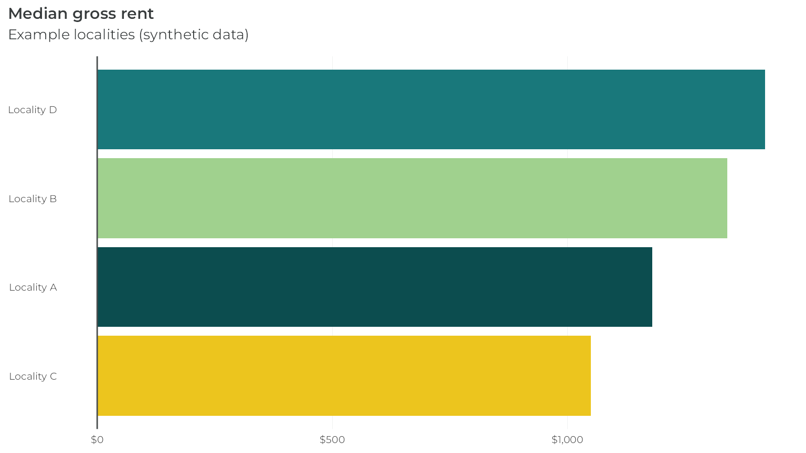

Adding a new client brand to hdatools
Source:vignettes/articles/adding-a-brand.Rmd
adding-a-brand.Rmdhdatools’ theming is built on one idea: brands are
data. Every theme_*(),
scale_color_*()/scale_fill_*(),
scale_*_*_c()/scale_*_*_b(), and
*_colors/*_color() export is a thin,
brand-agnostic wrapper over a single internal registry,
.brands (see R/brands.R). Adding a new client
brand means adding one entry to that registry — the
wrappers below it are one-liners you copy-and-rename, not new logic.
This article walks through how VHA was added as hdatools’ fourth brand, as the worked example.
1. Confirm the brand assets first
Before writing any code, get three things confirmed directly (never invent or infer them):
- The brand’s hex palette, with a label for each color.
- Rights to bundle the brand’s font(s) — hdatools ships static
.ttffiles ininst/fonts/, registered offline viasystemfonts::register_font()(from the bundled file, never fetched from a font server), so redistribution rights matter, not just “the font looks free.” - Any design decisions specific to the brand (base text size, output-format size adjustments, line height, title/subtitle margins) if the client already has an existing house style to match.
VHA’s palette and Montserrat’s OFL licensing were confirmed in chat
before R/brands.R was touched.
2. Add the registry entry
Every brand entry in .brands has the same shape:
vha = list(
palette = c(
"Dark Turq" = "#0C4D4F",
"Light Green" = "#A0D18E",
"Yellow" = "#ECC51E",
"Light Turq" = "#19787B",
"Grey" = "#2E3030",
"Light Blue" = "#E3F3F5"
),
gradient = NULL, # only populated for brands with a legacy
# scale_*_gradient_*() to soft-deprecate
na_color = "#d6dbdb",
fonts = list(title = "Montserrat", body = "Montserrat"),
base_size = 13,
html_adjust = 4,
pdf_adjust = 7,
lineheight = 0.9,
theme_fonts = list(
title = "Montserrat", subtitle = "Montserrat",
caption = "Montserrat", strip = NULL # NULL tracks the caller's base_family
),
theme_margins = list(
title = ggplot2::margin(b = 10, unit = "pt"),
subtitle = ggplot2::margin(t = -5, b = 10, unit = "pt")
),
ramps = list(
sequential = list(h1 = 196.3, c1 = 22, l1 = 27, l2 = 95, power = 0.90),
diverging = list(h1 = 196.3, h2 = 67.6, c1 = 70, l1 = 40, l2 = 95, power = 0.90)
)
)The ramps HCL parameters aren’t hand-picked colors —
h1/h2 are the sequential/diverging anchor
colors’ own HCL hue (compute with
colorspace::hex2RGB(hex) |> methods::as("polarLUV"));
c1/l1 follow that anchor’s chroma/lightness;
l2 = 95 and the cream light-end hue/chroma are fixed
constants shared by every brand (R/ramps.R). Render a
swatch and run a CVD simulation
(colorspace::deutan()/protan()/tritan())
before committing the params — a hue whose natural lightness is far from
the dark anchor (VHA’s Yellow, used for the diverging ramp’s second arm)
can render muddy or lose its identity at the anchor lightness. That’s an
sRGB gamut limit, not a mistake; document it as a provisional ramp (see
scale_color_vha_c()) rather than silently shipping a ramp
that looks wrong.
If the brand introduces a new font family, bundle its static
.ttf files under inst/fonts/<family>/
alongside its license file, add a manifest row to
inst/fonts/LICENSES.md, and register it in
register_hda_fonts() (R/theme_helpers.R) with
systemfonts::register_font().
3. Add the one-line wrapper exports
Every other brand-specific symbol is a direct copy of an existing brand’s wrapper, renamed:
-
R/colors.R:vha_colors <- .brands$vha$paletteandvha_color <- .brand_color(.brands$vha$palette, "VHA"). -
R/themes.R:theme_vha()calls.brand_theme(.brands$vha, brand = "vha", ...)with the brand’s ownbase_size/base_family/html_adjust/pdf_adjustdefaults. -
R/scales.R:scale_color_vha()/scale_fill_vha()(+scale_colour_vha()alias) call.scale_brand_discrete();scale_*_vha_c()/scale_*_vha_b()(+ aliases) call.scale_brand_continuous()/.scale_brand_binned().
None of R/scales.R’s or R/themes.R’s shared
internals (.brand_theme(),
.scale_brand_discrete(),
.scale_brand_continuous(),
.scale_brand_binned(), .ramp_hex()) needed to
change, or even know VHA exists — they all take brand as a
string and read everything else from .brands[[brand]]. If
adding a brand ever requires an if (brand == "...") branch
in one of those internals, that’s a sign the shared builder isn’t
general enough yet — worth flagging before hand-rolling a brand-specific
exception.
4. Document and test
Run devtools::document() to pick up the new roxygen
blocks (NAMESPACE and man/*.Rd are generated —
never hand-edit them). Mirror the existing per-brand test coverage in
tests/testthat/: palette identity against the registry,
theme element identity via ggplot2::calc_element(), scale
output via ggplot2::ggplot_build(), and (if a new font was
bundled) that the .ttf files ship and register offline.
VHA in action
library(ggplot2)
library(scales)
library(hdatools)
housing_costs <- data.frame(
locality = c("Locality A", "Locality B", "Locality C", "Locality D"),
median_rent = c(1180, 1340, 1050, 1420)
)
ggplot(housing_costs, aes(median_rent, reorder(locality, median_rent), fill = locality)) +
geom_col() +
scale_fill_vha() +
scale_x_continuous(labels = label_dollar()) +
theme_vha(flip_gridlines = TRUE) +
add_zero_line("x") +
labs(
title = "Median gross rent",
subtitle = "Example localities (synthetic data)"
)
A bare theme_vha() with no scale_*() call
also brands the plot (ggplot2 >= 4.0’s theme-carried palette):
ggplot(housing_costs, aes(median_rent, reorder(locality, median_rent), fill = locality)) +
geom_col() +
scale_x_continuous(labels = label_dollar()) +
theme_vha(flip_gridlines = TRUE) +
add_zero_line("x") +
labs(
title = "Median gross rent",
subtitle = "No scale_fill_*() call — theme_vha() alone brands the fills"
)